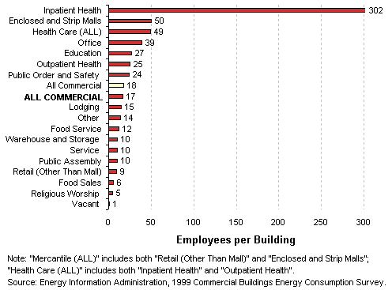
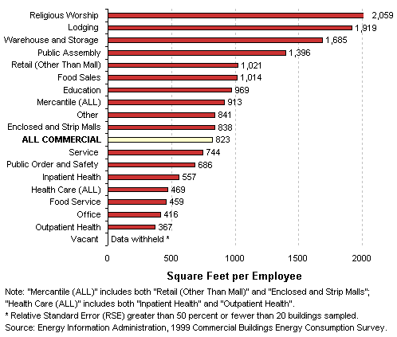

Compare
Activities by ...
Number of Employees
Total Employees by Building Type
Employees per Building
by Building Type
- Inpatient health care buildings averaged six times
more employees per building than any other building type.

Square Feet per
Employee by Building Type
- Outpatient health care and office buildings were the
most employee-intensive building activities (i.e. they had the least
square feet per employee).

Top
Specific questions may be directed to:
Joelle Michaels
joelle.michaels@eia.doe.gov
CBECS Manager
Release date: July 24, 2002
Page last modified:
May 4, 2009 2:51 PM
http://www.eia.gov/consumption/commercial/data/archive/cbecs/pba99/compareemployees.html
If you are having any technical problems with this
site, please contact the EIA webmaster at wmaster@eia.doe.gov. |